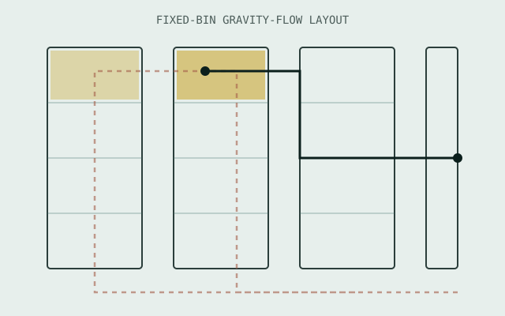

PROJ-01

High-Runner Picking Zone Redesign
Picking Zone Redesign: From Point-to-Point to Fixed-Bin Flow
Problem: High-runner SKUs were scattered across the warehouse with no logic to picker travel paths — pickers walked long, repeated routes for the items moved most often, capping throughput at roughly 4 lines/hour.
4 → 12 lines/hrpicking productivity (target, COO-approved)
↓ 78%picker travel distance
150–200%overall productivity gain
Method: SKU velocity analysis · fixed-bin slotting · gravity-flow rack redesign